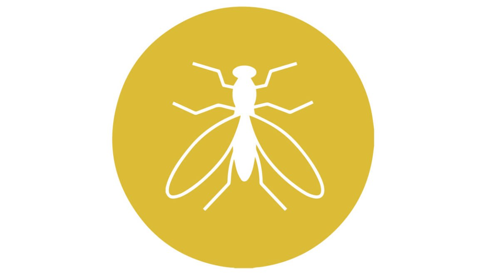

MUĞLA DELTA İLAÇLAMA
Sivrisinekler
Muğla Delta İlaçlama

SİVRİSİNEK
Kan emmek için yaklaşırken vızıltılı sesleriyle kolayca tanınan, ince uzun bacaklı narin böceklerdir.
Sivrisinekler tam başkalaşımlı böcekler olup 4 evreden geçerler: Suda geçen yumurta, larva , pupa evreleri ile karada geçen ve ergin evre.
Sivrisinekler doğru bilinenin aksine kışın da hangi evrede olursa olsun yaşayabilir. Yumurtadan çıkan sivrisinek yavrularının (larva ve pupa), büyüme evrelerini tamamlayabilmeleri için küçük bir su birikintisine ihtiyaç duyar. Bu, çamurlu bir yağmur suyu, bataklık, çeltik, havuz suyu ya da teneke kapta birikmiş bir su olabilir. Ancak durgun sular sivrisineklerin tercih sebebidir. Çünkü bu sular, içerdikleri fotosentez yapabilen bitki öbekleri sayesinde, oksijence zengindirler. Sivrisinek yumurtaları su bulunan her ortamda gelişebilirler, ancak bazı şartların sağlanması gerekir: Yumurtadan çıkacak olan larva, yetişkin bir sinek oluncaya kadar farklı evreler geçirecektir. Her evrede de yavru sineğin farklı ihtiyaçları olacaktır. Kuraklık ve aşırı sıcak da yumurtaların gelişimini engelleyebilir.
Bir sivrisineğin kan emmek için konukçusunu nasıl bulduğu tam olarak bilinememektedir. Kanda bulunan aminoasitlerin, eminlerin ve amonyağın karışımı cezbedicidir. En iyi cezbetme etkisinin nem ve sıcaklık olduğu bilinmektedir.
Ses
Geceleri sivrisinekler çoğu zaman görülemezler ve yalnızca tipik vızıltılarıyla kendilerini belli ederler. Henüz uyuyamamış insanları kısa süreli rahatsız eden bu vızıltılar, sivrisineklerde yaşamın devamı için önemlidir. Erkeğin kafasından çıkan 2 tane küçük ve tüylü duyargada bulunan çok sayıda duyu hücresinden meydana gelmiş Johnston organı , ses dalgalarının titreşimlerini alır ve ayırt eder. Bu tüylü duyargalar yalnızca dik durumdayken ses titreşimlerine karşı duyarlıdırlar. Johnston organı, eşeylerin bulunmasında çok önemlidir. Dişinin çıkardığı titreşimler belli bir rakamdan sonra (100-8000 titreşim/saniye) erkeklerde çiftleşme isteği yaratır. Erkeklerin sürü oluşturduğu evrelerde bu vızıltılar en üst seviyeye çıkar.
Besin
Larvaların besini algler, bir hücreliler ve detritusdur. Megarhinus larvaları kendi türlerine saldıracak kadar yırtıcıdır.
Ergin dişi ve erkeklerin besini bitki ve meyve sularından aldıkları şeker ve proteinden oluşur. Dişiler, yumurta yapabilmek için kan emmek zorundadır. Laboratuvar ortamında bitkisel besinlerle uzun süre yaşatılabilirler fakat yumurta elde edilemez. Familya türlerinin hepsi kan emmez; tamamen bitkisel beslenenler de vardır.
Taşıyıcılığı
Sivrisinekler kan taşıdıkları için hastalık bulaştırma riskleri vardır. Örneğin sarı humma , fil hastalığı ya da sıtma gibi parazit hastalıklarını taşıyabilirler. AIDS ‘e sebep olan HIV ise bu canlılarda gelişme ortamı bulamaz. Virüsler sivrisinekler tarafından taşınmaz.
Düşmanları
Pek çok doğal düşmanları vardır. Kurbağalar , balıklar , kertenkeleler , bukalemunlar , kuşlar , yarasalar ve böcek larvaları sivrisinek ve larvalarıyla beslenirler.
Bizimle iletişime geçin